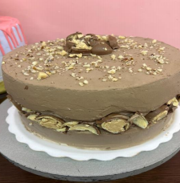

← Volver al módulo 6

Torta Bon o Bon
Una torta cremosa con relleno de mantequilla de maní y Bon o Bon triturado, cubierta con crema Dagusto y decorada con cacao, colorante café y frutos secos.
Ingredientes del Relleno
- ½ litro de crema de leche
- ½ taza de mantequilla de maní
- 15 g de gelatina neutra
- 5 Bon o Bon triturados
Ingredientes para Decoración
- ½ litro de crema Dagusto
- Cacao Celinda
- Colorante café
- Bon o Bon
- Almendras o nueces
Preparación del Relleno
-
Batir la crema de leche a punto medio.
-
Derretir la mantequilla de maní y la gelatina neutra a baño maría.
-
Agregar la mantequilla de maní y la gelatina neutra a la crema batida.
-
Incorporar los Bon o Bon triturados, cubrir con acetato y refrigerar 10–15 minutos.
-
Aplicar una capa atrapa migas y volver a refrigerar.
Decoración
-
Batir la crema Dagusto y agregar cacao y colorante café.
-
Decorar la torta a gusto o según la imagen, incluyendo Bon o Bon y frutos secos.